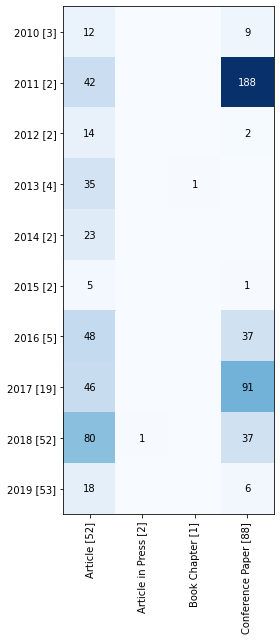
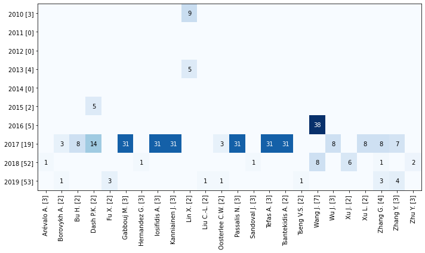
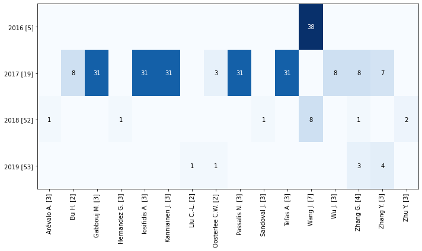
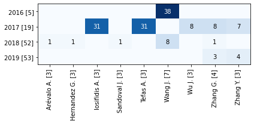
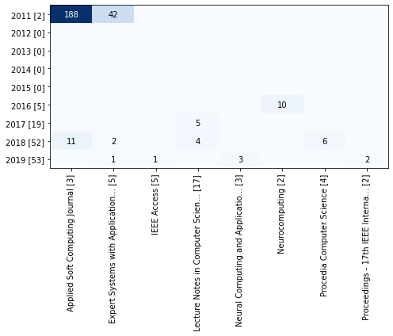
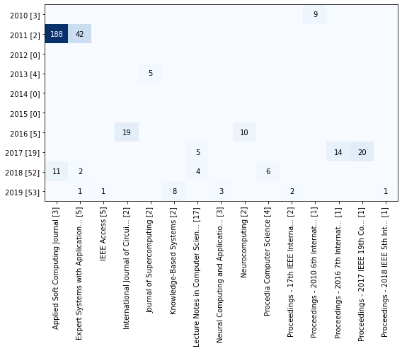
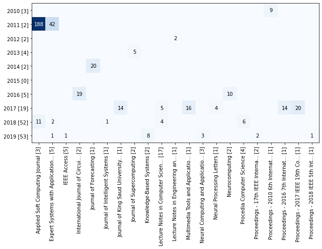
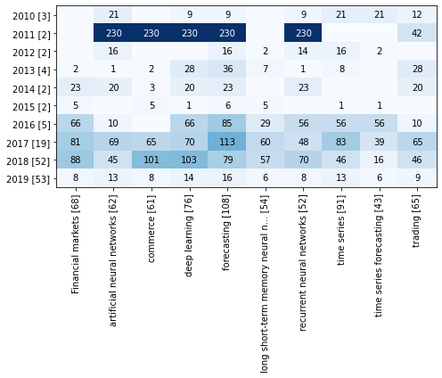
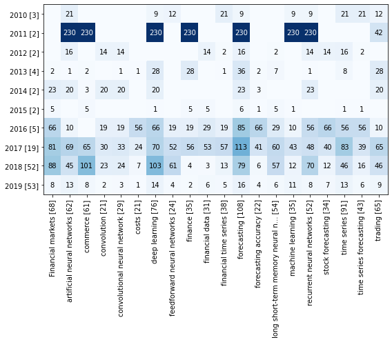
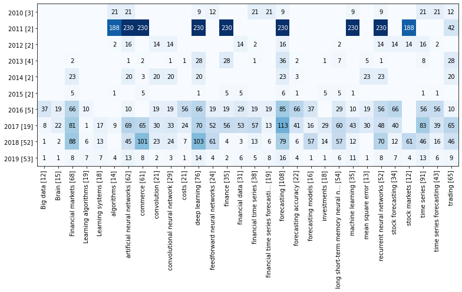

Citations by terms by year¶
[1]:
import matplotlib.pyplot as plt
import pandas as pd
df = pd.read_json("data-05.json", orient="records", lines=True)
[2]:
from techminer import DataFrame, Plot
df = DataFrame(df)
Document Type¶
[2]:
rdf.citations_by_terms_by_year("Document Type").head(40)
[2]:
| Document Type | Year | Cited by | ID | |
|---|---|---|---|---|
| 0 | Article [52] | 2010 [3] | 12.0 | [[*142*]] |
| 1 | Article [52] | 2011 [2] | 42.0 | [[*139*]] |
| 2 | Article [52] | 2012 [2] | 14.0 | [[*137*]] |
| 3 | Article [52] | 2013 [4] | 35.0 | [[*133*], [*134*], [*135*]] |
| 4 | Article [52] | 2014 [2] | 23.0 | [[*131*], [*132*]] |
| 5 | Article [52] | 2015 [2] | 5.0 | [[*130*]] |
| 6 | Article [52] | 2016 [5] | 48.0 | [[*125*], [*127*], [*128*]] |
| 7 | Article [52] | 2017 [19] | 46.0 | [[*105*], [*108*], [*111*], [*112*], [*113*], ... |
| 8 | Article [52] | 2018 [52] | 80.0 | [[*54*], [*62*], [*67*], [*68*], [*80*], [*104*]] |
| 9 | Article [52] | 2019 [53] | 18.0 | [[*2*], [*4*], [*6*], [*11*], [*18*], [*25*], ... |
| 10 | Article in Press [2] | 2018 [52] | 1.0 | [[*92*]] |
| 11 | Book Chapter [1] | 2013 [4] | 1.0 | [[*136*]] |
| 12 | Conference Paper [88] | 2010 [3] | 9.0 | [[*143*]] |
| 13 | Conference Paper [88] | 2011 [2] | 188.0 | [[*140*]] |
| 14 | Conference Paper [88] | 2012 [2] | 2.0 | [[*138*]] |
| 15 | Conference Paper [88] | 2015 [2] | 1.0 | [[*129*]] |
| 16 | Conference Paper [88] | 2016 [5] | 37.0 | [[*124*]] |
| 17 | Conference Paper [88] | 2017 [19] | 91.0 | [[*106*], [*107*], [*109*], [*110*], [*114*], ... |
| 18 | Conference Paper [88] | 2018 [52] | 37.0 | [[*70*], [*74*], [*76*], [*78*], [*81*], [*83*... |
| 19 | Conference Paper [88] | 2019 [53] | 6.0 | [[*17*], [*19*], [*20*], [*23*], [*24*], [*50*]] |
[3]:
rdf.citations_by_terms_by_year("Document Type").tomatrix()
[3]:
| 2010 [3] | 2011 [2] | 2012 [2] | 2013 [4] | 2014 [2] | 2015 [2] | 2016 [5] | 2017 [19] | 2018 [52] | 2019 [53] | |
|---|---|---|---|---|---|---|---|---|---|---|
| Article [52] | 12.0 | 42.0 | 14.0 | 35.0 | 23.0 | 5.0 | 48.0 | 46.0 | 80.0 | 18.0 |
| Article in Press [2] | 0.0 | 0.0 | 0.0 | 0.0 | 0.0 | 0.0 | 0.0 | 0.0 | 1.0 | 0.0 |
| Book Chapter [1] | 0.0 | 0.0 | 0.0 | 1.0 | 0.0 | 0.0 | 0.0 | 0.0 | 0.0 | 0.0 |
| Conference Paper [88] | 9.0 | 188.0 | 2.0 | 0.0 | 0.0 | 1.0 | 37.0 | 91.0 | 37.0 | 6.0 |
[4]:
rdf.citations_by_terms_by_year("Document Type").heatmap(figsize=(4, 9))

Authors¶
[5]:
rdf.citations_by_terms_by_year("Authors", sep=",").head(40)
[5]:
| Authors | Year | Cited by | ID | |
|---|---|---|---|---|
| 0 | Adam M.T.P. [1] | 2018 [52] | 6.0 | [[*70*]] |
| 1 | Afolabi D. [1] | 2017 [19] | 3.0 | [[*108*]] |
| 2 | Akita R. [1] | 2016 [5] | 37.0 | [[*124*]] |
| 3 | Al-Askar H. [1] | 2016 [5] | 10.0 | [[*125*]] |
| 4 | Al-Jumeily D. [1] | 2016 [5] | 10.0 | [[*125*]] |
| 5 | Ali Mahmud S. [1] | 2014 [2] | 3.0 | [[*131*]] |
| 6 | Arda Boluk S. [1] | 2018 [52] | 2.0 | [[*83*]] |
| 7 | Arévalo A. [3] | 2018 [52] | 1.0 | [[*100*]] |
| 8 | Baek Y. [1] | 2018 [52] | 2.0 | [[*54*]] |
| 9 | Bahrpeyma F. [1] | 2018 [52] | 1.0 | [[*96*]] |
| 10 | Barrett E. [1] | 2018 [52] | 4.0 | [[*76*]] |
| 11 | Bebarta D.K. [1] | 2015 [2] | 5.0 | [[*130*]] |
| 12 | Bekiros S.D. [1] | 2013 [4] | 2.0 | [[*133*]] |
| 13 | Binder A. [1] | 2019 [53] | 1.0 | [[*6*]] |
| 14 | Bisoi R. [1] | 2017 [19] | 14.0 | [[*112*]] |
| 15 | Biswal B. [1] | 2015 [2] | 5.0 | [[*130*]] |
| 16 | Bohte S. [2] | 2017 [19] | 3.0 | [[*120*]] |
| 17 | Bohte S. [2] | 2019 [53] | 1.0 | [[*18*]] |
| 18 | Borovykh A. [2] | 2017 [19] | 3.0 | [[*120*]] |
| 19 | Borovykh A. [2] | 2019 [53] | 1.0 | [[*18*]] |
| 20 | Bruce N.D.B. [1] | 2019 [53] | 1.0 | [[*20*]] |
| 21 | Bu H. [2] | 2017 [19] | 8.0 | [[*115*]] |
| 22 | Buczkowski P. [1] | 2017 [19] | 1.0 | [[*122*]] |
| 23 | Cai M. [1] | 2019 [53] | 1.0 | [[*47*]] |
| 24 | Cai X. [1] | 2013 [4] | 5.0 | [[*135*]] |
| 25 | Cambria E. [1] | 2019 [53] | 3.0 | [[*4*]] |
| 26 | Chen A.-P. [1] | 2017 [19] | 14.0 | [[*116*]] |
| 27 | Chen J.-F. [1] | 2017 [19] | 14.0 | [[*116*]] |
| 28 | Chen J.-H. [1] | 2018 [52] | 1.0 | [[*92*]] |
| 29 | Chen W. [1] | 2017 [19] | 7.0 | [[*109*]] |
| 30 | Chen W.-L. [1] | 2017 [19] | 14.0 | [[*116*]] |
| 31 | Cheng C.-H. [1] | 2012 [2] | 14.0 | [[*137*]] |
| 32 | Chiong R. [1] | 2018 [52] | 6.0 | [[*70*]] |
| 33 | Cristo M. [1] | 2015 [2] | 1.0 | [[*129*]] |
| 34 | Cui L. [1] | 2019 [53] | 5.0 | [[*25*]] |
| 35 | Cuzzocrea A. [1] | 2019 [53] | 1.0 | [[*24*]] |
| 36 | Dash P.K. [2] | 2015 [2] | 5.0 | [[*130*]] |
| 37 | Dash P.K. [2] | 2017 [19] | 14.0 | [[*112*]] |
| 38 | Dash R. [1] | 2017 [19] | 14.0 | [[*112*]] |
| 39 | Di Persio L. [2] | 2016 [5] | 19.0 | [[*127*]] |
[6]:
rdf.citations_by_terms_by_year("Authors", sep=",", top_n=30).tomatrix()
[6]:
| 2010 [3] | 2011 [0] | 2012 [0] | 2013 [4] | 2014 [0] | 2015 [2] | 2016 [5] | 2017 [19] | 2018 [52] | 2019 [53] | |
|---|---|---|---|---|---|---|---|---|---|---|
| Arévalo A. [3] | 0.0 | 0.0 | 0.0 | 0.0 | 0.0 | 0.0 | 0.0 | 0.0 | 1.0 | 0.0 |
| Borovykh A. [2] | 0.0 | 0.0 | 0.0 | 0.0 | 0.0 | 0.0 | 0.0 | 3.0 | 0.0 | 1.0 |
| Bu H. [2] | 0.0 | 0.0 | 0.0 | 0.0 | 0.0 | 0.0 | 0.0 | 8.0 | 0.0 | 0.0 |
| Dash P.K. [2] | 0.0 | 0.0 | 0.0 | 0.0 | 0.0 | 5.0 | 0.0 | 14.0 | 0.0 | 0.0 |
| Fu X. [2] | 0.0 | 0.0 | 0.0 | 0.0 | 0.0 | 0.0 | 0.0 | 0.0 | 0.0 | 3.0 |
| Gabbouj M. [3] | 0.0 | 0.0 | 0.0 | 0.0 | 0.0 | 0.0 | 0.0 | 31.0 | 0.0 | 0.0 |
| Hernandez G. [3] | 0.0 | 0.0 | 0.0 | 0.0 | 0.0 | 0.0 | 0.0 | 0.0 | 1.0 | 0.0 |
| Iosifidis A. [3] | 0.0 | 0.0 | 0.0 | 0.0 | 0.0 | 0.0 | 0.0 | 31.0 | 0.0 | 0.0 |
| Kanniainen J. [3] | 0.0 | 0.0 | 0.0 | 0.0 | 0.0 | 0.0 | 0.0 | 31.0 | 0.0 | 0.0 |
| Lin X. [2] | 9.0 | 0.0 | 0.0 | 5.0 | 0.0 | 0.0 | 0.0 | 0.0 | 0.0 | 0.0 |
| Liu C.-L. [2] | 0.0 | 0.0 | 0.0 | 0.0 | 0.0 | 0.0 | 0.0 | 0.0 | 0.0 | 1.0 |
| Oosterlee C.W. [2] | 0.0 | 0.0 | 0.0 | 0.0 | 0.0 | 0.0 | 0.0 | 3.0 | 0.0 | 1.0 |
| Passalis N. [3] | 0.0 | 0.0 | 0.0 | 0.0 | 0.0 | 0.0 | 0.0 | 31.0 | 0.0 | 0.0 |
| Sandoval J. [3] | 0.0 | 0.0 | 0.0 | 0.0 | 0.0 | 0.0 | 0.0 | 0.0 | 1.0 | 0.0 |
| Tefas A. [3] | 0.0 | 0.0 | 0.0 | 0.0 | 0.0 | 0.0 | 0.0 | 31.0 | 0.0 | 0.0 |
| Tsantekidis A. [2] | 0.0 | 0.0 | 0.0 | 0.0 | 0.0 | 0.0 | 0.0 | 31.0 | 0.0 | 0.0 |
| Tseng V.S. [2] | 0.0 | 0.0 | 0.0 | 0.0 | 0.0 | 0.0 | 0.0 | 0.0 | 0.0 | 1.0 |
| Wang J. [7] | 0.0 | 0.0 | 0.0 | 0.0 | 0.0 | 0.0 | 38.0 | 0.0 | 8.0 | 0.0 |
| Wu J. [3] | 0.0 | 0.0 | 0.0 | 0.0 | 0.0 | 0.0 | 0.0 | 8.0 | 0.0 | 0.0 |
| Xu J. [2] | 0.0 | 0.0 | 0.0 | 0.0 | 0.0 | 0.0 | 0.0 | 0.0 | 6.0 | 0.0 |
| Xu L. [2] | 0.0 | 0.0 | 0.0 | 0.0 | 0.0 | 0.0 | 0.0 | 8.0 | 0.0 | 0.0 |
| Zhang G. [4] | 0.0 | 0.0 | 0.0 | 0.0 | 0.0 | 0.0 | 0.0 | 8.0 | 1.0 | 3.0 |
| Zhang Y. [3] | 0.0 | 0.0 | 0.0 | 0.0 | 0.0 | 0.0 | 0.0 | 7.0 | 0.0 | 4.0 |
| Zhu Y. [3] | 0.0 | 0.0 | 0.0 | 0.0 | 0.0 | 0.0 | 0.0 | 0.0 | 2.0 | 0.0 |
[7]:
rdf.citations_by_terms_by_year("Authors", sep=",", top_n=30).heatmap(figsize=(10, 6))

[8]:
rdf.citations_by_terms_by_year("Authors", sep=",", top_n=20).heatmap(figsize=(10, 6))

[9]:
rdf.citations_by_terms_by_year("Authors", sep=",", top_n=10).heatmap(figsize=(6, 3))

Source title¶
[10]:
rdf.citations_by_terms_by_year("Source title", sep=None).head(40)
[10]:
| Source title | Year | Cited by | ID | |
|---|---|---|---|---|
| 0 | 14th International Conference o... [1] | 2017 [19] | 8.0 | [[*115*]] |
| 1 | 2016 IEEE/ACIS 15th Internation... [1] | 2016 [5] | 37.0 | [[*124*]] |
| 2 | 2017 12th International Confere... [1] | 2018 [52] | 4.0 | [[*76*]] |
| 3 | 2017 IEEE International Confere... [1] | 2018 [52] | 6.0 | [[*81*]] |
| 4 | 2017 IEEE Symposium Series on C... [1] | 2018 [52] | 2.0 | [[*83*]] |
| 5 | 2017 International Conference o... [1] | 2017 [19] | 16.0 | [[*106*]] |
| 6 | 2017 International Smart Cities... [1] | 2017 [19] | 7.0 | [[*109*]] |
| 7 | 25th European Signal Processing... [1] | 2017 [19] | 11.0 | [[*110*]] |
| 8 | 32nd AAAI Conference on Artific... [1] | 2018 [52] | 4.0 | [[*87*]] |
| 9 | Advanced Information and Knowle... [1] | 2013 [4] | 1.0 | [[*136*]] |
| 10 | Applied Artificial Intelligence... [1] | 2014 [2] | 3.0 | [[*131*]] |
| 11 | Applied Soft Computing Journal [3] | 2011 [2] | 188.0 | [[*140*]] |
| 12 | Applied Soft Computing Journal [3] | 2018 [52] | 11.0 | [[*67*], [*80*]] |
| 13 | Cluster Computing [1] | 2017 [19] | 7.0 | [[*117*]] |
| 14 | Computational Intelligence and ... [1] | 2016 [5] | 19.0 | [[*128*]] |
| 15 | Engineering Applications of Art... [1] | 2013 [4] | 28.0 | [[*134*]] |
| 16 | European Journal of Finance [1] | 2010 [3] | 12.0 | [[*142*]] |
| 17 | European Journal of Operational... [1] | 2018 [52] | 49.0 | [[*62*]] |
| 18 | Expert Systems with Application... [5] | 2011 [2] | 42.0 | [[*139*]] |
| 19 | Expert Systems with Application... [5] | 2018 [52] | 2.0 | [[*54*]] |
| 20 | Expert Systems with Application... [5] | 2019 [53] | 1.0 | [[*11*]] |
| 21 | GECCO 2018 Companion - Proceedi... [1] | 2018 [52] | 6.0 | [[*70*]] |
| 22 | ICAART 2017 - Proceedings of th... [1] | 2017 [19] | 1.0 | [[*118*]] |
| 23 | IEEE Access [5] | 2019 [53] | 1.0 | [[*47*]] |
| 24 | IEEE International Conference o... [1] | 2019 [53] | 1.0 | [[*17*]] |
| 25 | IEEE Transactions on Knowledge ... [1] | 2019 [53] | 1.0 | [[*6*]] |
| 26 | Information Fusion [1] | 2019 [53] | 3.0 | [[*2*]] |
| 27 | International Journal of Circui... [2] | 2016 [5] | 19.0 | [[*127*]] |
| 28 | International Journal of Comput... [1] | 2015 [2] | 5.0 | [[*130*]] |
| 29 | International Journal of Innova... [1] | 2012 [2] | 14.0 | [[*137*]] |
| 30 | International Journal of Machin... [1] | 2017 [19] | 2.0 | [[*111*]] |
| 31 | Journal of Computational Financ... [1] | 2019 [53] | 1.0 | [[*18*]] |
| 32 | Journal of Computational Scienc... [1] | 2018 [52] | 15.0 | [[*104*]] |
| 33 | Journal of Forecasting [1] | 2014 [2] | 20.0 | [[*132*]] |
| 34 | Journal of Intelligent Systems [1] | 2018 [52] | 1.0 | [[*92*]] |
| 35 | Journal of King Saud University... [1] | 2017 [19] | 14.0 | [[*112*]] |
| 36 | Journal of Supercomputing [2] | 2013 [4] | 5.0 | [[*135*]] |
| 37 | Knowledge-Based Systems [2] | 2019 [53] | 8.0 | [[*4*], [*25*]] |
| 38 | Lecture Notes in Computer Scien... [17] | 2017 [19] | 5.0 | [[*119*], [*120*], [*122*]] |
| 39 | Lecture Notes in Computer Scien... [17] | 2018 [52] | 4.0 | [[*88*], [*96*], [*100*], [*102*]] |
[11]:
rdf.citations_by_terms_by_year("Source title", sep=None, top_n=30).tomatrix()
[11]:
| 2010 [3] | 2011 [2] | 2012 [2] | 2013 [4] | 2014 [2] | 2015 [0] | 2016 [5] | 2017 [19] | 2018 [52] | 2019 [53] | |
|---|---|---|---|---|---|---|---|---|---|---|
| Applied Soft Computing Journal [3] | 0.0 | 188.0 | 0.0 | 0.0 | 0.0 | 0.0 | 0.0 | 0.0 | 11.0 | 0.0 |
| Expert Systems with Application... [5] | 0.0 | 42.0 | 0.0 | 0.0 | 0.0 | 0.0 | 0.0 | 0.0 | 2.0 | 1.0 |
| IEEE Access [5] | 0.0 | 0.0 | 0.0 | 0.0 | 0.0 | 0.0 | 0.0 | 0.0 | 0.0 | 1.0 |
| International Journal of Circui... [2] | 0.0 | 0.0 | 0.0 | 0.0 | 0.0 | 0.0 | 19.0 | 0.0 | 0.0 | 0.0 |
| Journal of Forecasting [1] | 0.0 | 0.0 | 0.0 | 0.0 | 20.0 | 0.0 | 0.0 | 0.0 | 0.0 | 0.0 |
| Journal of Intelligent Systems [1] | 0.0 | 0.0 | 0.0 | 0.0 | 0.0 | 0.0 | 0.0 | 0.0 | 1.0 | 0.0 |
| Journal of King Saud University... [1] | 0.0 | 0.0 | 0.0 | 0.0 | 0.0 | 0.0 | 0.0 | 14.0 | 0.0 | 0.0 |
| Journal of Supercomputing [2] | 0.0 | 0.0 | 0.0 | 5.0 | 0.0 | 0.0 | 0.0 | 0.0 | 0.0 | 0.0 |
| Knowledge-Based Systems [2] | 0.0 | 0.0 | 0.0 | 0.0 | 0.0 | 0.0 | 0.0 | 0.0 | 0.0 | 8.0 |
| Lecture Notes in Computer Scien... [17] | 0.0 | 0.0 | 0.0 | 0.0 | 0.0 | 0.0 | 0.0 | 5.0 | 4.0 | 0.0 |
| Lecture Notes in Engineering an... [1] | 0.0 | 0.0 | 2.0 | 0.0 | 0.0 | 0.0 | 0.0 | 0.0 | 0.0 | 0.0 |
| Multimedia Tools and Applicatio... [1] | 0.0 | 0.0 | 0.0 | 0.0 | 0.0 | 0.0 | 0.0 | 16.0 | 0.0 | 0.0 |
| Neural Computing and Applicatio... [3] | 0.0 | 0.0 | 0.0 | 0.0 | 0.0 | 0.0 | 0.0 | 0.0 | 0.0 | 3.0 |
| Neural Processing Letters [1] | 0.0 | 0.0 | 0.0 | 0.0 | 0.0 | 0.0 | 0.0 | 4.0 | 0.0 | 0.0 |
| Neurocomputing [2] | 0.0 | 0.0 | 0.0 | 0.0 | 0.0 | 0.0 | 10.0 | 0.0 | 0.0 | 0.0 |
| Procedia Computer Science [4] | 0.0 | 0.0 | 0.0 | 0.0 | 0.0 | 0.0 | 0.0 | 0.0 | 6.0 | 0.0 |
| Proceedings - 17th IEEE Interna... [2] | 0.0 | 0.0 | 0.0 | 0.0 | 0.0 | 0.0 | 0.0 | 0.0 | 0.0 | 2.0 |
| Proceedings - 2010 6th Internat... [1] | 9.0 | 0.0 | 0.0 | 0.0 | 0.0 | 0.0 | 0.0 | 0.0 | 0.0 | 0.0 |
| Proceedings - 2016 7th Internat... [1] | 0.0 | 0.0 | 0.0 | 0.0 | 0.0 | 0.0 | 0.0 | 14.0 | 0.0 | 0.0 |
| Proceedings - 2017 IEEE 19th Co... [1] | 0.0 | 0.0 | 0.0 | 0.0 | 0.0 | 0.0 | 0.0 | 20.0 | 0.0 | 0.0 |
| Proceedings - 2018 IEEE 5th Int... [1] | 0.0 | 0.0 | 0.0 | 0.0 | 0.0 | 0.0 | 0.0 | 0.0 | 0.0 | 1.0 |
[12]:
rdf.citations_by_terms_by_year("Source title", sep=None, top_n=10).heatmap(
figsize=(7, 6)
)

[13]:
rdf.citations_by_terms_by_year("Source title", sep=None, top_n=20).heatmap(
figsize=(8, 7)
)

[14]:
rdf.citations_by_terms_by_year("Source title", sep=None, top_n=30).heatmap(
figsize=(9, 7)
)

Keywords¶
[15]:
rdf.citations_by_terms_by_year("keywords (cleaned)", sep=";").head(40)
[15]:
| keywords (cleaned) | Year | Cited by | ID | |
|---|---|---|---|---|
| 0 | ARTICLE [1] | 2010 [3] | 9.0 | [[*143*]] |
| 1 | Accounts receivable [1] | 2017 [19] | 8.0 | [[*115*]] |
| 2 | Accuracy Improvement [1] | 2017 [19] | 20.0 | [[*114*]] |
| 3 | Accuracy of classifications [1] | 2018 [52] | 15.0 | [[*104*]] |
| 4 | Advanced Analytics [2] | 2017 [19] | 1.0 | [[*118*]] |
| 5 | Aircraft [1] | 2013 [4] | 5.0 | [[*135*]] |
| 6 | Anomalous events [1] | 2017 [19] | 9.0 | [[*107*]] |
| 7 | Application programs [1] | 2014 [2] | 20.0 | [[*132*]] |
| 8 | Article [2] | 2017 [19] | 11.0 | [[*110*]] |
| 9 | Artificial Neural Network [2] | 2010 [3] | 9.0 | [[*143*]] |
| 10 | Artificial intelligence mark up... [1] | 2019 [53] | 1.0 | [[*23*]] |
| 11 | Auto encoders [2] | 2018 [52] | 4.0 | [[*74*]] |
| 12 | Auto regressive models [2] | 2018 [52] | 4.0 | [[*76*]] |
| 13 | Autoencoder [1] | 2018 [52] | 4.0 | [[*74*]] |
| 14 | Baseline methods [2] | 2019 [53] | 1.0 | [[*20*]] |
| 15 | Baseline models [1] | 2016 [5] | 19.0 | [[*128*]] |
| 16 | Benchmarking [2] | 2015 [2] | 1.0 | [[*129*]] |
| 17 | Benchmarking [2] | 2017 [19] | 16.0 | [[*113*]] |
| 18 | Big data [12] | 2016 [5] | 37.0 | [[*124*]] |
| 19 | Big data [12] | 2017 [19] | 8.0 | [[*109*], [*118*]] |
| 20 | Big data [12] | 2018 [52] | 1.0 | [[*100*]] |
| 21 | Big data [12] | 2019 [53] | 1.0 | [[*19*]] |
| 22 | Binary alloys [1] | 2019 [53] | 1.0 | [[*6*]] |
| 23 | Bioinformatics [1] | 2019 [53] | 3.0 | [[*2*]] |
| 24 | Biological vision systems [1] | 2017 [19] | 1.0 | [[*118*]] |
| 25 | Bitcoin [1] | 2017 [19] | 14.0 | [[*116*]] |
| 26 | Brain [15] | 2016 [5] | 19.0 | [[*128*]] |
| 27 | Brain [15] | 2017 [19] | 22.0 | [[*116*], [*117*], [*119*]] |
| 28 | Brain [15] | 2018 [52] | 2.0 | [[*83*]] |
| 29 | Brain [15] | 2019 [53] | 1.0 | [[*6*]] |
| 30 | Brownian movement [1] | 2018 [52] | 15.0 | [[*104*]] |
| 31 | CART [1] | 2017 [19] | 1.0 | [[*122*]] |
| 32 | CSI 300 indices [1] | 2013 [4] | 2.0 | [[*133*]] |
| 33 | Cash flow prediction [1] | 2017 [19] | 8.0 | [[*115*]] |
| 34 | Change patterns [1] | 2016 [5] | 19.0 | [[*128*]] |
| 35 | Chaotic systems [2] | 2016 [5] | 10.0 | [[*125*]] |
| 36 | Chemical detection [1] | 2013 [4] | 5.0 | [[*135*]] |
| 37 | Chinese stock market [3] | 2018 [52] | 49.0 | [[*62*]] |
| 38 | Chinese stock market [3] | 2019 [53] | 1.0 | [[*20*]] |
| 39 | Classifiers [6] | 2011 [2] | 230.0 | [[*139*], [*140*]] |
[16]:
rdf.citations_by_terms_by_year("keywords (cleaned)", sep=";", top_n=30).tomatrix()
[16]:
| 2010 [3] | 2011 [2] | 2012 [2] | 2013 [4] | 2014 [2] | 2015 [2] | 2016 [5] | 2017 [19] | 2018 [52] | 2019 [53] | |
|---|---|---|---|---|---|---|---|---|---|---|
| Big data [12] | 0.0 | 0.0 | 0.0 | 0.0 | 0.0 | 0.0 | 37.0 | 8.0 | 1.0 | 1.0 |
| Brain [15] | 0.0 | 0.0 | 0.0 | 0.0 | 0.0 | 0.0 | 19.0 | 22.0 | 2.0 | 1.0 |
| Financial markets [68] | 0.0 | 0.0 | 0.0 | 2.0 | 23.0 | 5.0 | 66.0 | 81.0 | 88.0 | 8.0 |
| Learning algorithms [19] | 0.0 | 0.0 | 0.0 | 0.0 | 0.0 | 0.0 | 10.0 | 1.0 | 6.0 | 7.0 |
| Learning systems [18] | 0.0 | 0.0 | 0.0 | 0.0 | 0.0 | 0.0 | 0.0 | 17.0 | 13.0 | 7.0 |
| algorithms [14] | 21.0 | 188.0 | 2.0 | 0.0 | 0.0 | 1.0 | 0.0 | 9.0 | 0.0 | 4.0 |
| artificial neural networks [62] | 21.0 | 230.0 | 16.0 | 1.0 | 20.0 | 0.0 | 10.0 | 69.0 | 45.0 | 13.0 |
| commerce [61] | 0.0 | 230.0 | 0.0 | 2.0 | 3.0 | 5.0 | 0.0 | 65.0 | 101.0 | 8.0 |
| convolution [21] | 0.0 | 0.0 | 14.0 | 0.0 | 20.0 | 0.0 | 19.0 | 30.0 | 23.0 | 2.0 |
| convolutional neural network [29] | 0.0 | 0.0 | 14.0 | 1.0 | 20.0 | 0.0 | 19.0 | 33.0 | 24.0 | 3.0 |
| costs [21] | 0.0 | 0.0 | 0.0 | 1.0 | 0.0 | 0.0 | 56.0 | 24.0 | 7.0 | 1.0 |
| deep learning [76] | 9.0 | 230.0 | 0.0 | 28.0 | 20.0 | 1.0 | 66.0 | 70.0 | 103.0 | 14.0 |
| feedforward neural networks [24] | 12.0 | 0.0 | 0.0 | 0.0 | 0.0 | 0.0 | 19.0 | 52.0 | 61.0 | 4.0 |
| finance [35] | 0.0 | 230.0 | 0.0 | 28.0 | 0.0 | 5.0 | 19.0 | 56.0 | 4.0 | 2.0 |
| financial data [31] | 0.0 | 0.0 | 14.0 | 0.0 | 0.0 | 5.0 | 29.0 | 53.0 | 3.0 | 6.0 |
| financial time series [38] | 21.0 | 0.0 | 2.0 | 1.0 | 0.0 | 0.0 | 19.0 | 57.0 | 13.0 | 5.0 |
| financial time series forecasti... [19] | 21.0 | 0.0 | 0.0 | 0.0 | 0.0 | 0.0 | 19.0 | 13.0 | 6.0 | 8.0 |
| forecasting [108] | 9.0 | 230.0 | 16.0 | 36.0 | 23.0 | 6.0 | 85.0 | 113.0 | 79.0 | 16.0 |
| forecasting accuracy [22] | 0.0 | 0.0 | 0.0 | 2.0 | 3.0 | 1.0 | 66.0 | 41.0 | 6.0 | 4.0 |
| forecasting models [16] | 0.0 | 0.0 | 0.0 | 0.0 | 0.0 | 0.0 | 37.0 | 16.0 | 57.0 | 1.0 |
| investments [18] | 0.0 | 0.0 | 0.0 | 1.0 | 0.0 | 5.0 | 0.0 | 29.0 | 14.0 | 1.0 |
| long short-term memory neural n... [54] | 0.0 | 0.0 | 2.0 | 7.0 | 0.0 | 5.0 | 29.0 | 60.0 | 57.0 | 6.0 |
| machine learning [35] | 9.0 | 230.0 | 0.0 | 0.0 | 0.0 | 1.0 | 10.0 | 43.0 | 12.0 | 11.0 |
| mean square error [13] | 0.0 | 0.0 | 0.0 | 5.0 | 23.0 | 0.0 | 19.0 | 30.0 | 0.0 | 1.0 |
| recurrent neural networks [52] | 9.0 | 230.0 | 14.0 | 1.0 | 23.0 | 0.0 | 56.0 | 48.0 | 70.0 | 8.0 |
| stock forecasting [34] | 0.0 | 0.0 | 14.0 | 0.0 | 0.0 | 0.0 | 66.0 | 40.0 | 12.0 | 7.0 |
| stock markets [12] | 0.0 | 188.0 | 14.0 | 0.0 | 0.0 | 0.0 | 0.0 | 0.0 | 61.0 | 4.0 |
| time series [91] | 21.0 | 0.0 | 16.0 | 8.0 | 0.0 | 1.0 | 56.0 | 83.0 | 46.0 | 13.0 |
| time series forecasting [43] | 21.0 | 0.0 | 2.0 | 0.0 | 0.0 | 1.0 | 56.0 | 39.0 | 16.0 | 6.0 |
| trading [65] | 12.0 | 42.0 | 0.0 | 28.0 | 20.0 | 0.0 | 10.0 | 65.0 | 46.0 | 9.0 |
[17]:
rdf.citations_by_terms_by_year("keywords (cleaned)", sep=";", top_n=10).heatmap(
figsize=(7, 6)
)

[18]:
rdf.citations_by_terms_by_year("keywords (cleaned)", sep=";", top_n=20).heatmap(
figsize=(8, 7)
)

[19]:
rdf.citations_by_terms_by_year("keywords (cleaned)", sep=";", top_n=30).heatmap(
figsize=(11, 7)
)
